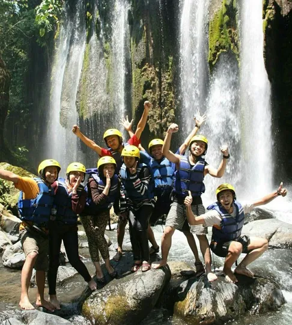

Mengenal OutboundBatu
Berdedikasi untuk menciptakan sinergi, kebersamaan, dan pengalaman petualangan terbaik sejak 2015 di alam sejuk Kota Batu.
Cerita Kami
Bagaimana kami bermula dan berkembang menjadi mitra terpercaya.

Lebih dari Sekadar Rekreasi
Didirikan atas dasar kecintaan terhadap alam and dinamika kelompok, OutboundBatu berawal dari sekelompok fasilitator muda yang sering memandu kegiatan kepemimpinan di kawasan hutan pinus Kota Batu.
Seiring berjalannya waktu, kami menyadari bahwa instansi, perusahaan, maupun sekolah membutuhkan lebih dari sekadar liburan. Mereka butuh wahana untuk meleburkan ego, membangun komunikasi, dan memperkuat teamwork.
Hingga kini, kami telah dipercaya oleh ratusan perusahaan nasional untuk mengelola berbagai program, mulai dari Fun Games kasual hingga simulasi Character Building yang intensif dan berdampak panjang pada kinerja tim.
Visi & Misi
Pondasi dari setiap program yang kami jalankan.
Visi Kami
Menjadi pelopor penyedia layanan manajemen luar ruang (Outdoor Management) di Jawa Timur yang inovatif, berdampak positif pada pengembangan SDM, serta selalu mengedepankan kelestarian alam dan lingkungan.
Misi Kami
- Menyediakan program outbound yang aman dengan standar keselamatan tinggi.
- Menggunakan pendekatan *Experiential Learning* untuk melatih *soft skill* peserta.
- Memberdayakan potensi wisata alam lokal Kota Batu dengan bijaksana.
- Terus meningkatkan kapasitas fasilitator melalui sertifikasi berkelanjutan.
Fasilitas Kami
Dukungan infrastruktur lengkap untuk kenyamanan dan keamanan aktivitas Anda.
Area Outbound & Camping
Kawasan luas yang menyatu dengan alam, dilengkapi area camping ground dengan pemandangan pegunungan yang asri.
Peralatan Safety Standar
Perlengkapan highrope, flying fox, dan aktivitas air yang rutin dikalibrasi sesuai standar keselamatan internasional.
Aula & Pendopo
Ruang berkumpul semi-indoor yang luas untuk sesi materi, istirahat, atau acara kebersamaan meskipun cuaca hujan.
Fasilitas Umum Bersih
Tersedia mushola yang nyaman, toilet bersih berjumlah memadai, serta area parkir yang luas untuk bus pariwisata.
Kenali Instruktur Kami
Tim profesional, tersertifikasi, dan siap mencairkan suasana.
Rudi Santoso
Chief Instructor & Master GameMemiliki pengalaman lebih dari 10 tahun di bidang Experiential Learning dan tersertifikasi BNSP.
Rina Amelia
Safety & Rescue ManagerAhli manajemen risiko alam terbuka, memastikan seluruh rangkaian kegiatan aman dari awal hingga akhir.
Andi Pratama
Team Building SpecialistPakar pemecah kebekuan (ice-breaking) yang menjamin setiap peserta terlibat aktif dan tertawa lepas.
Pertanyaan Sering Diajukan (FAQ)
Temukan jawaban cepat untuk pertanyaan umum terkait layanan kami.
Apakah kegiatan aman untuk semua usia?
Ya, keamanan adalah prioritas kami. Semua permainan dan simulasi dirancang serta diawasi oleh instruktur tersertifikasi. Kami juga dapat menyesuaikan tingkat intensitas aktivitas sesuai dengan kelompok usia dan kondisi fisik peserta yang hadir.
Apakah harga paket sudah termasuk transportasi & konsumsi?
Sebagian besar paket standar kami sudah mencakup tiket masuk lokasi, fasilitas kegiatan, perlengkapan, dan makan siang/snack. Namun, untuk transportasi dari kota asal menuju titik kumpul, dapat ditambahkan sebagai opsi layanan eksklusif tambahan.
Berapa jumlah minimal peserta untuk satu grup?
Untuk memaksimalkan esensi dinamika kelompok dalam *Team Building*, kami merekomendasikan jumlah minimal 20 orang. Namun, kami tetap melayani kelompok kecil atau *family gathering* dengan program yang dikhususkan.
Siap Mengukir Pengalaman Seru Bersama Tim Anda?
Jangan tunda lagi. Konsultasikan kebutuhan instansi atau perusahaan Anda secara gratis dan dapatkan penawaran paket outbound terbaik hari ini!
Hubungi Kami Sekarang